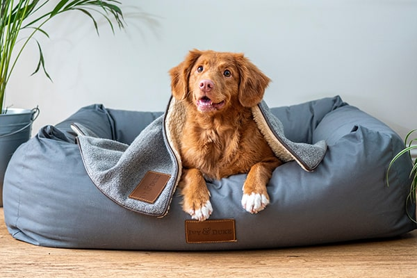
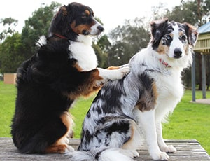

Nosotros...
Cuidado y Contención
En Lost Pets nos encargamos de brindarle un lugar cálido y con cuidados de primera, hasta que nuestros animales vuelvan a su hogar.
Una vez que la mascota es reportada, nos comunicamos inmediatamente con el usuario que realizo la solicitud para coordinar una cita y llevarlo a un hogar de tránsito, donde con las mejores comodidades y compañia esperara por su amo.
ÚNICOS en el Amba y alrededores
Personal profesional a cargo
Atención al público 24/7

